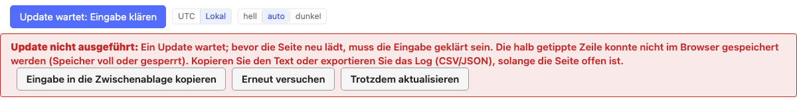
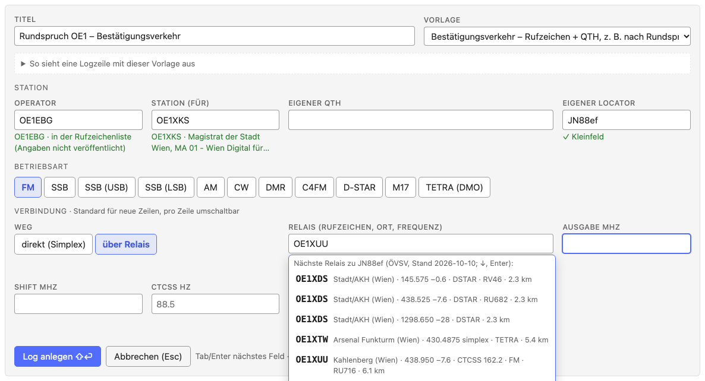
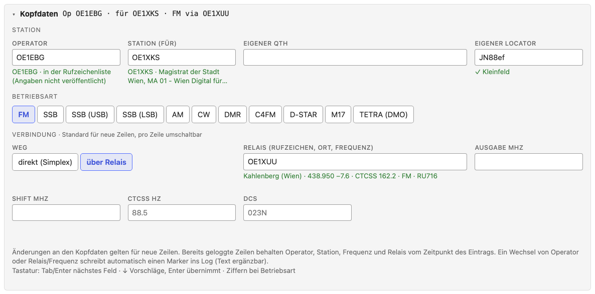
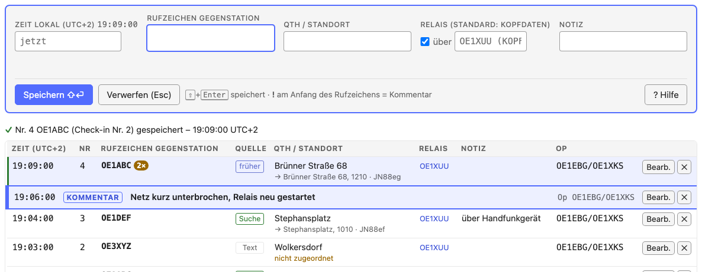
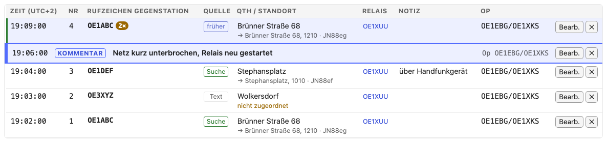
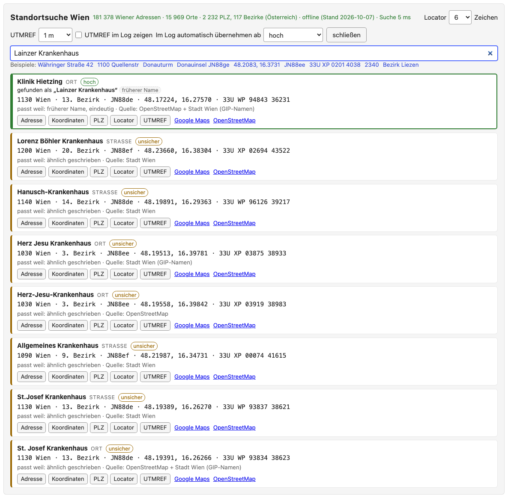
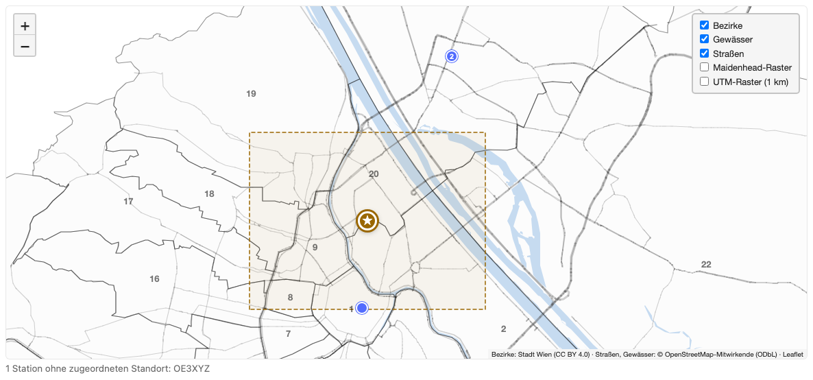
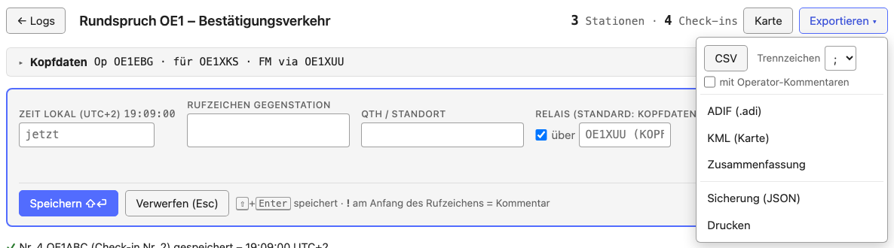
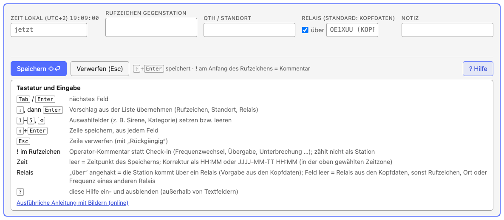

Bestätigungsverkehr: Anleitung
Bestätigungsverkehr öffnen Alle Tools · Offline-Datei · Datenquellen · Quellcode
Der Bestätigungsverkehr ist ein Logbuch für Runden, in denen sich Stationen nur melden: Bestätigungsverkehr nach einem Rundspruch, RST-Runden oder Umfragen wie den Zivilschutz-Probealarm. Er läuft vollständig im Browser und ohne Internet; alle Daten bleiben auf dem Gerät.
Die Kurzfassung steht im Werkzeug selbst: „? Hilfe“ unter dem Eingabefeld oder die Taste ? (außerhalb von Textfeldern).
Kurz: so geht's los
- Bestätigungsverkehr öffnen, einmal mit Internet; danach läuft er auch offline (Vorbereitung).
- „+ Neues Log“: Titel und Vorlage wählen (Ein Log anlegen), dann Operator, Station und Relais eintragen (Kopfdaten).
- Das erste Rufzeichen eintippen und mit ⇧+Enter speichern (Check-ins aufnehmen).
- Am Ende „Exportieren ▾“ → „Sicherung (JSON)“, dazu CSV oder ADIF (Export und Sicherung).
Vorbereitung
Offline verwenden. Beim ersten Öffnen mit Internet lädt das Werkzeug alles, was es braucht: die österreichische Rufzeichenliste, die Relaisliste des ÖVSV, Wiener Adressen und Orte, österreichische Postleitzahlen und Bezirke sowie die Karte. Danach funktioniert es ohne Verbindung; „offline bereit ✓“ oben rechts zeigt das an. Am Handy oder Tablet über „Zum Startbildschirm hinzufügen“ als App ablegen. Für Laptops ohne Internet gibt es die Offline-Datei (eine HTML-Datei, etwa 7 MB, unten auf der Startseite), etwa für einen USB-Stick.
Speicher. „Speicher dauerhaft ✓“ heißt, der Browser löscht die Daten nicht von selbst. Steht dort „nicht dauerhaft“, regelmäßig eine Sicherung (JSON) exportieren.
Offline-Status. „offline bereit ✓“ oben rechts heißt: alles ist im Browser gespeichert. „offline: wird eingerichtet…“ dauert beim ersten Öffnen kurz. „offline nicht bereit“ heißt: der Browser hat die Offline-Kopie gelöscht; mit Internet geöffnet, repariert sie sich selbst („Offline-Kopie wird repariert…“). Gibt es auf dem Server inzwischen eine neue Version, steht „Neue Version auf dem Server – bitte aktualisieren“; dann über „Update verfügbar“ aktualisieren. Bei „Offline-Einrichtung fehlgeschlagen“ oder „Reparatur fehlgeschlagen“ die Seite mit Internet neu laden. „Entwicklungsmodus (nicht offline)“ gibt es nur auf Entwicklungsservern.
Neue Version. Erscheint „Update verfügbar“, ist eine neue Version geladen. Sie wird erst nach einem Klick darauf aktiv, nicht von selbst. Der Klick lädt aber alle offenen Tabs und Fenster des Werkzeugs neu; einen Aufschub, den man je Tab wählen kann, gibt es nicht. Gespeicherte Zeilen und Logs bleiben unverändert. Vor dem Neuladen sichert jeder Tab die halb getippte Zeile und die Kopfdaten als Entwurf und holt sie danach zurück. Gelingt das Sichern in einem Tab nicht (zum Beispiel bei vollem Speicher), wird dieser Tab nicht neu geladen: die Eingabe bleibt stehen, der Knopf heißt „Update wartet: Eingabe klären“, und eine rote Meldung unter der Kopfzeile sagt, was nicht gesichert ist. Dort kann man den Text in die Zwischenablage kopieren (geht das nicht, erscheint er zum Markieren und Kopieren von Hand), „Erneut versuchen“ oder, mit Rückfrage, „Trotzdem aktualisieren“ (der genannte Text geht dann verloren). Hat ein anderer Tab das Update schon installiert, steht dieselbe Meldung dort („Neuladen nicht ausgeführt“), und die Seite läuft bis zum Neuladen mit der alten Version. Schlägt das Laden der neuen Version oder die Suche danach fehl, steht „Update fehlgeschlagen“ bzw. „Update-Prüfung fehlgeschlagen“ daneben; die installierte Version läuft weiter. Trotzdem vor jedem Update: fertige Zeilen speichern (⇧+Enter) und wichtige unfertige Eingaben außerhalb des Werkzeugs kopieren. Ein Entwurf ist keine gespeicherte Zeile, und die Sicherung (JSON) enthält keine unfertigen Eingaben (siehe Gespeichert, Entwurf und Sicherung).

Mehrere Tabs. Ein Log sollte nur in einem Tab offen sein; sonst warnt das Werkzeug („nur ein Tab pro Log!“).
Gespeichert, Entwurf und Sicherung
Gespeichert heißt: die Zeile ist im Speicher des Browsers abgeschlossen („gespeichert“ erscheint erst danach). Schlägt das Speichern fehl, erscheint ein rotes Banner und die Eingabe bleibt im Formular.
Entwurf ist die halb getippte Zeile. Sie wird laufend zwischengesichert und nach einem Neuladen oder Absturz zurückgeholt, kann aber verloren gehen (zum Beispiel wenn der Browser die Website-Daten löscht oder der Speicher voll ist). Was zählt, ist die gespeicherte Zeile.
Sicherung (JSON). „Download gestartet“ ist nicht „Sicherung aufbewahrt“: Der Browser meldet dem Werkzeug nur, dass er die Datei bekommen hat, nicht ob und wo sie liegt. Eine Sicherung ist erst eine Sicherung, wenn die Datei an einem Ort liegt, den Sie kontrollieren (anderer Datenträger, USB-Stick, anderer Rechner). Probieren Sie den Import gelegentlich aus. Die Sicherung ist eine Momentaufnahme dieses Logs mit allen Zeilen, auch den gelöschten, und enthält die Daten unverschlüsselt.
Sicherung importieren. „Sicherung importieren…“ auf der Startseite:
- Die Datei wird zuerst geprüft. Ist sie keine gültige Sicherung des Bestätigungsverkehrs, wird nichts importiert und nichts verändert.
- Alle Logs der Datei werden ganz oder gar nicht übernommen.
- Sehr große Sicherungen (über 50 MB oder 200000 Zeilen und Versionen) werden beim Sichern automatisch in mehrere Dateien „…_teil-1-von-3.json“ usw. geteilt, nichts geht verloren. Beim Importieren alle Teile gemeinsam auswählen (in der Dateiauswahl mehrere Dateien markieren): sie werden wie eine einzige Sicherung, ganz oder gar nicht, übernommen. Fehlt ein Teil, wird nichts importiert und die Meldung nennt den fehlenden Teil. Der Browser fragt dabei eventuell, ob mehrere Downloads erlaubt sind; die Meldung sagt nur, dass N Dateien gestartet wurden – prüfen Sie, dass alle N angekommen sind (die Sicherung gilt dann nicht automatisch als gemacht). Die Teile lassen sich nur im Bestätigungsverkehr importieren, und nur mit einer aktuellen Version des Werkzeugs: eine ältere Version könnte einen einzelnen Teil als unvollständige Sicherung einspielen. Alle Teile zusammen dürfen höchstens 12 Dateien, 480 MB und 1000000 Zeilen und Versionen umfassen. Ist ein Log dafür zu groß, meldet das Werkzeug „Zu groß für eine einzige Sicherung“ bevor etwas heruntergeladen wird: dann die Logs einzeln sichern. Auch ein einzelner sehr langer Text (eine Notiz oder ein Kommentar über 50 MB) wird dabei auf mehrere Teile verteilt und beim Import wieder zusammengesetzt; fehlt ein Stück, wird nichts importiert. Eine einzelne Datei darf höchstens 50 MB und 200000 Zeilen und Versionen enthalten.
- Es wird nie etwas Vorhandenes überschrieben. Ist die ID des Logs, einer seiner Zeilen oder einer früheren Fassung schon gespeichert, kommt das Log als Kopie mit neuen IDs und dem Zusatz „(Import)“ dazu. Andere Logs behalten ID und Titel.
- Ältere Sicherungen lassen sich importieren. Fehlt etwas oder weicht etwas ab, steht es als Hinweis unter „Hinweise zur Sicherung“. Es wird nichts weggelassen; nötige Werte werden bei Bedarf ergänzt (z. B. der Zähler für die nächste Nummer), und eine Zeile ohne lesbare Zeit bekommt ihre Erstellungs- bzw. Exportzeit, mit Hinweis.
Ersatzspeicher. Steht in der Fußzeile „localStorage (Ersatzspeicher)“, war
IndexedDB nicht verfügbar. Der Ersatzspeicher ist klein (rund 5 MB) und hat
bei einer Adresse mit http:// (statt HTTPS oder localhost) keine
Sperre zwischen Tabs: zwei Tabs könnten dann gleichzeitig schreiben. Nur
einen Tab pro Log verwenden und häufig sichern. Läuft das Werkzeug später
wieder mit IndexedDB, bietet es an, die Datensätze aus dem Ersatzspeicher zu
übernehmen („In IndexedDB übernehmen“). Das Angebot überschreibt nichts, was
in IndexedDB steht; Datensätze, die sich nicht übernehmen lassen (zum
Beispiel weil sie von den gespeicherten abweichen), bleiben im Ersatzspeicher
und werden mit Grund aufgelistet; „Als JSON sichern“ lädt sie herunter.
Daten schützen. Die Daten liegen im Browser dieses Geräts und, als Sicherung, in Dateien, jeweils unverschlüsselt. Gerät und Benutzerkonto schützen (Festplattenverschlüsselung, Sperrbildschirm) und auf einem gemeinsam genutzten Rechner ein eigenes Browserprofil verwenden. Der Browser trennt die Daten nach Adresse (Rechnername und Port), nicht nach Verzeichnis: Andere Seiten derselben Adresse können sie lesen. Betreibt eine Organisation das Werkzeug selbst, sollte sie es auf einer eigenen Adresse bereitstellen. Die Offline-Datei und die Seite im Netz haben getrennte Speicher; zum Umziehen die Sicherung verwenden. Der Verlauf der Änderungen (frühere Fassungen) schützt vor Versehen, nicht vor Manipulation.
Ein Log anlegen

„+ Neues Log“ auf der Startseite:
- Titel, z. B. „Rundspruch OE1 – Bestätigungsverkehr“.
- Vorlage: welche Felder eine Zeile hat.
- Bestätigungsverkehr: Rufzeichen und QTH / Standort.
- Rufzeichen + RST: RST erhalten / gegeben, Name, QTH.
- Zivilschutz-Probealarm: Standort mit PLZ, Hörbarkeit der Sirene (Schulnote 1–5) innen bei geschlossenem und offenem Fenster und im Freien, AT-Alert erhalten, sonst Handy und Version.
„So sieht eine Logzeile mit dieser Vorlage aus“ zeigt ein Beispiel. - Kopfdaten (siehe unten). Ein neues Log übernimmt die Kopfdaten des zuletzt angelegten.
Mit ⇧+Enter oder „Log anlegen“ geht es los.
Kopfdaten

Die Kopfdaten stehen aufklappbar über dem Eingabefeld und gelten für neue Zeilen. Gespeicherte Zeilen behalten Operator, Station, Frequenz und Relais vom Zeitpunkt des Eintrags.
| Feld | Bedeutung | Beispiel |
|---|---|---|
| Operator | wer funkt | OE1EBG |
| Station (für) | für welche Station (Klubstation, Sonderrufzeichen) | OE1XKS |
| Eigener QTH | der eigene Standort, mit Ortssuche | Wien 1220, Wagramer Straße |
| Eigener Locator | Maidenhead-Locator des eigenen Standorts | JN88ef |
| Betriebsart | FM, DMR, C4FM, D-STAR, M17, TETRA, SSB … | FM |
| Weg | direkt (Simplex) oder über Relais | über Relais |
| Frequenz MHz | bei direkt | 145,500 |
| Relais | Rufzeichen, Ort oder Frequenz eines Relais aus der ÖVSV-Liste; setzt Ausgabe, Shift und Signalisierung | OE1XUU |
Ein Wechsel von Operator oder Relais/Frequenz schreibt automatisch eine Markierung ins Log („OE1XYZ übernimmt von OE1ABC“, „OE1XUU → direkt“). Ihr Text lässt sich ergänzen.
Check-ins aufnehmen

- Rufzeichen Gegenstation eintippen. Die Vorschläge kommen aus diesem und früheren Logs und aus der Rufzeichenliste (Name und Ort stehen darunter). ↓ und Enter übernimmt einen Vorschlag. Ohne Markierung übernimmt Enter nur einen Vorschlag, der das Getippte vervollständigt; ein vollständig getipptes, unbekanntes Rufzeichen bleibt, wie es ist.
- Zeit: leer = Zeitpunkt des Speicherns. Korrektur als
19:42oder2026-10-08 19:42, in der oben gewählten Zeitzone (UTC oder lokal). - QTH / Standort (siehe Standort).
- Relais: „über“ angehakt = die Station kommt über das Relais aus den Kopfdaten. Für ein anderes Relais dessen Rufzeichen, Ort oder Frequenz eintragen.
- Notiz: freier Text.
- ⇧+Enter speichert, aus jedem Feld. Esc verwirft die Zeile, mit „Rückgängig“.
Wiederholte Check-ins. Meldet sich eine Station ein weiteres Mal, zeigt das Formular die früheren Check-ins und bietet „Werte vom letzten Check-in übernehmen“ an. Im Log steht die Anzahl neben dem Rufzeichen (2×).
Operator-Kommentare. Beginnt die Eingabe im Rufzeichenfeld mit !,
wird daraus ein Kommentar statt eines Check-ins: „!Netz pausiert“,
„!Wechsel auf 145,500“. Eine Kategorie (Frequenzwechsel, Schichtwechsel /
Übergabe, Unterbrechung, Technik, Sonstiges) wählt man mit den Ziffern
1–5. Kommentare zählen nicht als Station und kommen nie ins ADIF.
Das Log

Neueste Zeile oben. Oben stehen die Zahlen: Stationen und Check-ins. „Bearb.“ bearbeitet eine Zeile (die vorige Fassung bleibt gespeichert), ✕ löscht sie (wiederherstellbar unter „Gelöschte Zeilen und automatische Sicherungen“). Die Spalte Quelle sagt, woher der Standort kommt: Suche (Ortssuche), früher (aus einem früheren Check-in), Call (Lizenzadresse aus der Rufzeichenliste), Text (keinem Ort zugeordnet).
Standort
Das Feld QTH / Standort und die Standortsuche (📍 Standort oben rechts) finden offline:
- Wiener Adressen, Straßenecken („Praterstern / Lassallestraße“), Plätze, Haltestellen, Spitäler, Schulen und andere bekannte Orte, auch unter umgangssprachlichen oder früheren Namen;
- Orte um Wien und für ganz Österreich Postleitzahlen, Gemeinden und Bezirke;
- Koordinaten, Maidenhead-Locator und UTMREF (MGRS).

Ein sicherer Treffer wird automatisch übernommen (✓ mit „exakt“ oder „hoch“), sonst wählt man aus den Vorschlägen. Was nicht zugeordnet werden kann, wird als Text gespeichert. In der Standortsuche lassen sich die Genauigkeit des Locators und des UTMREF und die Schwelle für die automatische Übernahme einstellen.
Karte

„Karte“ zeigt alle Stationen mit Standort auf einer Wien-Karte, ohne Internet: Bezirke, Gewässer, Hauptstraßen und auf Wunsch das Locator-Gitter. Ein Stern ist der eigene Standort, eine Zahl am Punkt zeigt wiederholte Check-ins. Ein unsicherer Treffer ist ein hohler, gestrichelter Kreis. Stationen ohne Standort stehen unter der Karte.
Export und Sicherung

„Exportieren ▾“:
| Export | Inhalt |
|---|---|
| CSV | eine Zeile pro Check-in, für Excel; Trennzeichen ; (deutsches Excel) oder ,; optional mit Operator-Kommentaren. Werte, die mit =, +, - oder @ beginnen (z. B. eine Notiz „- Akku leer“), bekommen ein ' vorangestellt, damit Excel sie nicht als Formel ausführt; Zahlen wie -10 bleiben unverändert |
| ADIF (.adi) | für Logbuchprogramme, ADIF 3.1.7; über Relais mit PROP_MODE=RPT |
| KML (Karte) | Stationen mit Standort für Google Earth / Google My Maps |
| Zusammenfassung | Text: Rufzeichen, Statistik (beim Probealarm Sirenen-Noten und AT-Alert), Standorte, Kommentare und Operators |
| das Log als Tabelle | |
| Sicherung (JSON) | das ganze Log, auch gelöschte Zeilen; auf der Startseite mit „Sicherung importieren…“ wieder einspielen |
Ein Hinweis neben dem Titel erinnert an eine Sicherung, wenn seit dem letzten Export viele Zeilen dazugekommen sind. Auf der Startseite sichert „Alle sichern (JSON)“ alle Logs auf einmal.
Zeit: UTC oder lokal
Der Schalter UTC / Lokal oben rechts bestimmt, wie Zeiten angezeigt und
eingegeben werden. Gespeichert wird immer die genaue Zeit; CSV
(zeitstempel_utc) und ADIF bleiben in UTC.
Tastatur

| Taste | Wirkung |
|---|---|
| Tab / Enter | nächstes Feld |
| ↓, dann Enter | Vorschlag übernehmen (Rufzeichen, Standort, Relais) |
| 1 – 5, ⌫ | Auswahlfelder (z. B. Sirene, Kategorie) setzen bzw. leeren |
| ⇧+Enter | Zeile speichern, aus jedem Feld |
| Esc | Zeile verwerfen (mit „Rückgängig“) |
! am Anfang des Rufzeichens |
Operator-Kommentar statt Check-in |
| ? | Hilfe ein- und ausblenden (außerhalb von Textfeldern) |